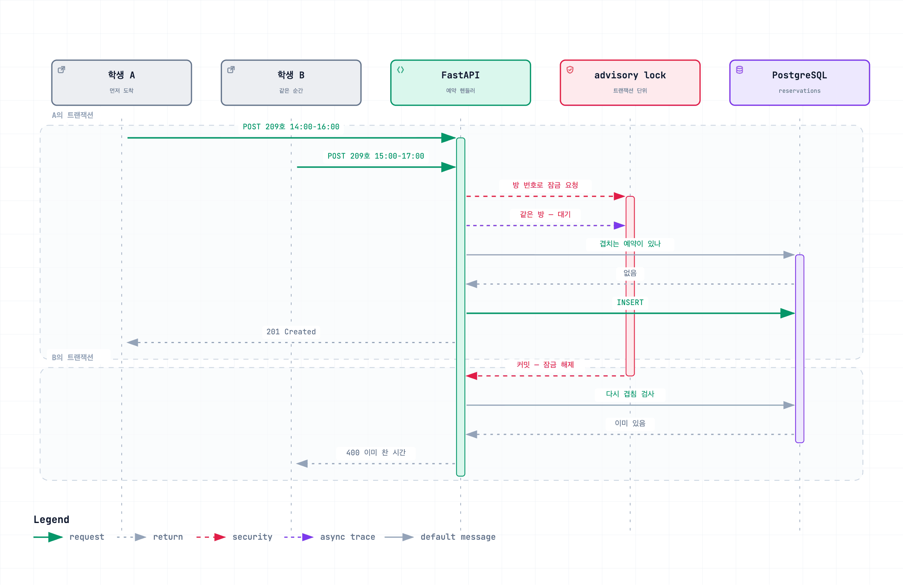

뉴뮤직학부 연습실 예약 시스템
학부 연습실 예약 서비스
Impact
- 8→1같은 자리에 동시 8요청이 와도 통과는 1건 — 트랜잭션 단위 advisory lock
- 12개겹침·취소·정원 규칙을 코드가 아니라 DB 제약으로 내림
Background
연습실 예약을 학과 카페 댓글과 구두로 하다 보니 누가 언제 쓰는지 확인할 수 없어서 중복 예약과 분쟁이 반복됐습니다. 화면을 만들면 되는 일처럼 보였지만 실제로 어려웠던 것은 어떤 예약을 거절해야 하는지 정하는 쪽이었습니다.
연습실이 네 개 층에 51실이고 이름이 124-2, 222-11 같은 번호라서 목록으로 늘어놓으면 학생이 그 방의 위치를 알 수 없었습니다.
Architecture
평면도를 그리는 좌표 자체를 데이터로 뒀습니다. cells(floor, x, y)가 복도와 벽이 차지하는 칸이고 rooms.pos_x/pos_y가 방 이름표 자리입니다. 관리자가 그린 값을 학생 화면이 그대로 읽어 평면도를 그립니다.
Contributions
평면도를 이미지 대신 좌표로 뒀다
평면도를 이미지 한 장으로 넣으면 공사나 용도 변경이 있을 때마다 이미지를 새로 만들고 좌표를 코드에 다시 적어 배포해야 합니다. 배치를 바꾸는 쪽은 학과 사무실인데 반영하는 쪽은 개발자가 됩니다. 관리자가 화면에서 펜으로 복도를 긋고 이름표를 얹으면 그 값이 그대로 저장되게 했습니다.

정책 값도 데이터베이스로 옮겼다
최대 예약 시간, 취소 마감, 운영 시간, 주간 오픈 시점이 전부 코드에 상수로 박혀 있었습니다. 이 값을 바꿔야 하는 쪽도 학과 사무실이라 데이터베이스로 옮기고 관리자 화면을 붙였습니다.
업무 규칙을 데이터베이스에도 넣었다
규칙을 전부 파이썬이 검사하고 있어서 SQL로 직접 넣으면 15시부터 13시까지 같은 예약도 들어갔습니다. 관리자가 데이터베이스를 직접 만지거나 배치 작업이 붙으면 코드의 검사를 지나치게 됩니다. CHECK와 UNIQUE, 인덱스 12개를 적용하고 넣기 전에 위반 데이터가 없는 것과 넣은 뒤 다섯 경우가 차단되는 것을 확인했습니다.
Troubleshooting
같은 순간에 온 두 예약이 둘 다 통과한다
- 문제
- 예약 생성이 충돌 검사 다음에 저장하는 순서라, 두 요청이 같은 순간에 오면 검사를 둘 다 통과하고 둘 다 저장됩니다. 예약이 주 단위로 금요일 9시에 열려서 요청이 그 순간에 몰리는 구조였습니다.
- 원인
- 이 조건은 키로 표현되지 않습니다.
먼저 (room_id, start_date, start_time)에 유니크 제약을 걸어 보려 했는데, 예약 길이가 1~2시간으로 가변이라 09:00-11:00과 10:00-12:00은 시작 시각이 달라 제약을 통과하면서 시간은 겹칩니다. SELECT ... FOR UPDATE도 맞지 않았습니다. 행 잠금은 이미 존재하는 행만 잠그는데, 문제가 생기는 순간은 겹치는 예약이 아직 하나도 없는 오픈 직후입니다. 결국 행이 아니라 임의의 숫자 키에 거는 잠금이 필요했습니다.
- 해결
pg_advisory_xact_lock으로 방과 날짜 단위 잠금을 걸었습니다. 방은 음수, 사용자는 양수로 키 공간을 나누고 획득 순서를 방에서 사용자로 고정해 교착을 막았습니다. 커넥션 풀러가 트랜잭션 모드라 세션 잠금은 다른 커넥션에서 풀릴 수 있어서 트랜잭션 단위를 골랐습니다.- 결과
- 8명이 같은 슬롯을 동시에 요청하는 시험에서 1건만 통과하고 데이터베이스에도 한 행만 남았습니다.

비밀번호가 평문으로 저장되고 있었다
- 문제
- 운영 중에 확인해 보니 저장과 전송, 화면 표시가 모두 평문이었고 관리자 화면에는 학생 비밀번호를 보여주는 버튼까지 있었습니다.
- 원인
- 이미 쓰는 사람이 있어서 한 번에 바꿀 수 없었습니다.
- 해결
- 로그인할 때 저장된 값이 해시가 아니면 평문으로 인증하고 성공하는 즉시 bcrypt로 다시 저장하게 했습니다. 해시로 바꾸면 관리자도 원래 값을 알 수 없어서 임시 비밀번호 발급 경로를 함께 만들었습니다.
- 결과
- 학생은 따로 할 일 없이 다음 로그인 한 번으로 전환됩니다.